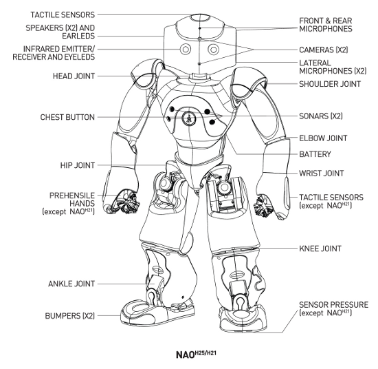

NAO Hardware | Product range | Motors & Kinematics | Components & Sensors | Optional devices
For full overview, see the datasheet of NAO H25 and NAO H21. NAO H25 is a NAO H21 with wrist joints actuated, prehensile hands and tactile sensors hands.
Many upgrade of NAO body type exist. They can be differentiated with the head’s back design.
You can call ALMotion API ALMotionProxy::getRobotConfig() to know you NAO’s body type and version.
import sys
from naoqi import ALProxy
if (len(sys.argv) < 2):
print "Usage: 'python motion_getrobotconfig.py IP [PORT]'"
sys.exit(1)
IP = sys.argv[1]
PORT = 9559
if (len(sys.argv) > 2):
PORT = sys.argv[2]
try:
proxy = ALProxy("ALMotion", IP, PORT)
except Exception,e:
print "Could not create proxy to ALMotion"
print "Error was: ",e
sys.exit(1)
# Example showing how to get the robot config
robotConfig = proxy.getRobotConfig()
for i in range(len(robotConfig[0])):
print robotConfig[0][i], ": ", robotConfig[1][i]
# "Model Type" : "naoH25", "naoH21", "naoT14" or "naoT2".
# "Head Version" : "VERSION_32" or "VERSION_33" or "VERSION_40".
# "Body Version" : "VERSION_32" or "VERSION_33" or "VERSION_40".
# "Laser" : True or False.
# "Legs" : True or False.
# "Arms" : True or False.
# "Extended Arms": True or False.
# "Hands" : True or False.
# "Arm Version" : "VERSION_32" or "VERSION_33" or "VERSION_40".